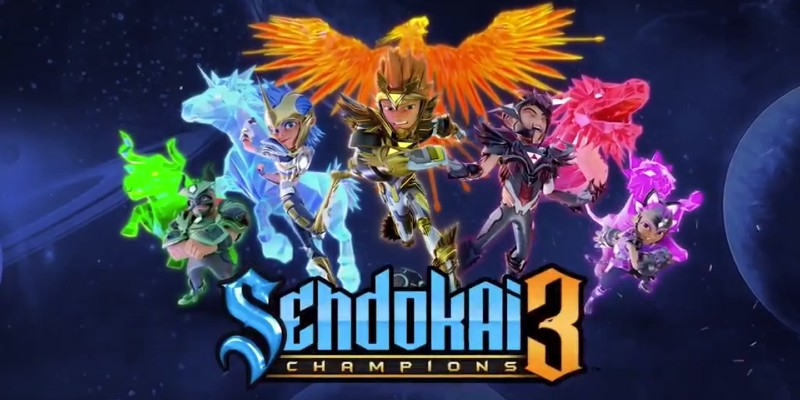
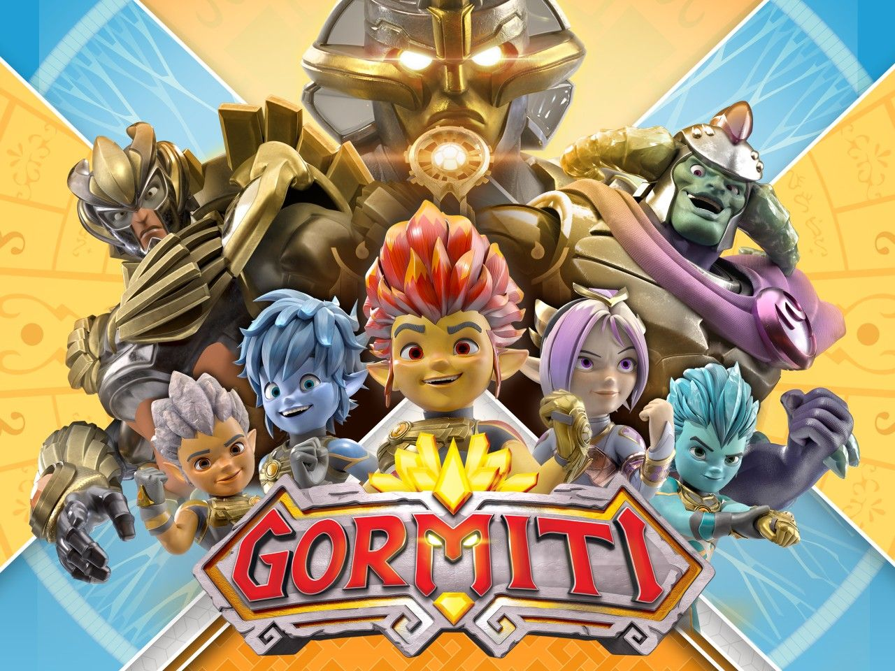

Sendokai
Desafío Champions Sendokai es una serie animada de España creada por Kotoc para RTVE. También se conoce como Campeones Sendokai en Hispanoamérica y Sendokai Champions en países de habla inglesa. Se estrenó el 9 de abril de 2013 en el canal Clan y en Cartoon Network. El 29 de septiembre de 2023, el canal oficial de Sendokai en YouTube mostró un adelanto de la tercera temporada. Esto ocurrió más de 10 años después del final de la segunda temporada. El episodio 53 de Sendokai Sengate se confirmó para el 31 de mayo de 2025.
- Temporada: Cuatro Guerreros Sendokai La historia comienza con Zak, Cloe, Kiet y Fenzy, cuatro chicos de la Tierra que no son muy populares ni buenos en deportes. Un día, encuentran unos brazaletes mágicos que los llevan a otra dimensión. Allí conocen al maestro Tänpo. Tänpo les explica que el imperio de los Zorn está conquistando todas las dimensiones del Multiverso. La Tierra está en peligro. Para salvarla, los chicos deben superar sus miedos, aprender el arte del Sendokai y convertirse en guerreros. Su misión es ganar el Gran Torneo Sendokai.
- Segunda Temporada: El Origen del Hakuru Cuando la Fortaleza Zorn explotó, Sidmodius robó la caja de Sestrad. Viajó millones de años al pasado, a Masara, para convertirse en el Gran Zorn con la ayuda de Chronam-Yatt. Sidmodius usaba la caja de Sestrad para absorber la energía (sen) de los masarianos, convirtiéndolos en Yakis, criaturas sin energía. Chronam-Yatt envió un Yaki a la Tierra para llamar la atención de los Senkuns. Este Yaki los atacó y casi causó un desastre. Por suerte, Tänpo, Lalith y Chronam-Sunn llegaron para salvarlos. Les contaron la situación a los Senkuns, quienes aceptaron la misión de perseguir a Sidmodius. Se les unieron Lon y Kido, que tenían más secretos de lo que parecía.
- Tercera Temporada: Sengate La tercera temporada se anunció en 2019 en un evento de Kotoc en México, con el título provisional de «Sendokai Revolutions». En 2023, RTVE anunció que «Sendokai Generations» sería una de las series que se estrenarían, aunque sin fecha. El 28 de septiembre de 2023, se mostró un adelanto en YouTube anunciando la tercera temporada como «S3». El 28 de noviembre de 2024, se anunció que el episodio 53 ya estaba terminado. Finalmente, el 31 de enero de 2025, se reveló que el episodio se estrenaría el 31 de mayo de 2025.

Gormiti
- Gormiti una serie de animación del año 2018. La serie es de gormiti, sin embargo, no tiene nada que ver con los antiguos, ni la historia ni los personajes. Gormiti Es una serie de televisión animada española/italiano (ya que el estudio es Kotoc y esta situado en España) hecha por animacion 3D por ordenador. Basada en los personajes de Gormiti, la serie es una nueva versión dirigida a un público infantil (5 a 8 años) y contiene un total de 52 episodios de 11 minutos cada uno. Los primeros 5 episodios se publicaron el 10 de septiembre de 2018 en Boing (España), el 21 de septiembre de 2018 en Rai Play (Italia), el 1 de octubre de 2018 en Rai Gulp y Rai YoYo (Italia) comienzan a transmitir la serie. Desde el 7 de diciembre de 2018.

Mutant Busters
- Mutant Busters Mutant Busters es una serie española de animación del género de acción, ciencia ficción y comedia que fue producida por Planeta Junior, compañía del Grupo Planeta y De Agostini, y emitida en la cadena temática Neox en el año 2015, mediante el bloque de programación 'Kidz'. Actualmente ponen reposiciones. La serie, dirigida especialmente hacia niños, nacía con la intención de convertirse en un referente para los pequeños de la casa gracias a su mezcla de humor y acción. La ficción fue estrenada en Neox el 31 de octubre de 2015 y contó con 52 episodios de unos 10 minutos de duración, aproximadamente. La serie fue inspirada por una línea de juguetes de la conocida marca Famosa. Diego Ibáñez, responsable del departamento comercial internacional de la productora, definió el proyecto como "un cruce entre 'The Walking Dead' y 'Mad Max' para niños en un futuro postapocalíptico en el que dominan los mutantes".

Síguenos en Nuestras Redes sociales tanto Instagram como Tiktok